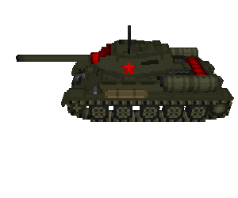
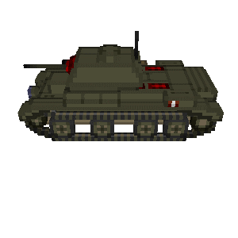
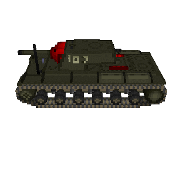
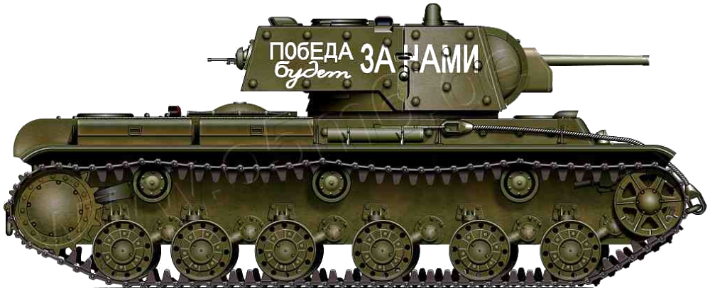
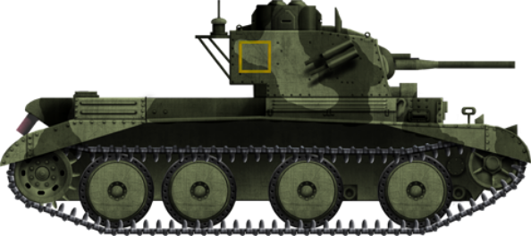
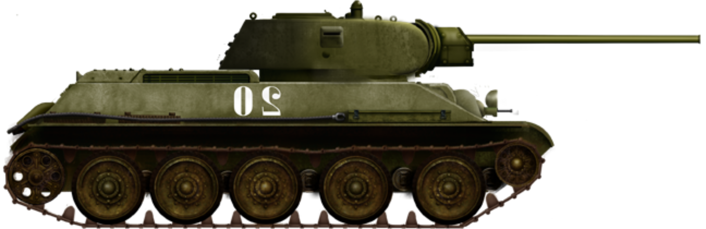

MK-III
Height: 2.59 m (8 ft 6 in)
Crew: 4
Armor: 6–14 mm
Guns: QF 2-pounder gun 87 rounds, .303 Vicker machine gun (3750 rounds)
Engine: Nuffield Liberty V12 petrol 340 hp (250 kW)
Speed: 48 km/h (30 mph)
KV-1
Height: 2.32 m (7 ft 7 in)
Engine: V12 diesel V2, 600 bhp (400 kW)
Total weight: 45 tonnes
Crew: 4 (commander, driver, 2 gunners)
Guns: 76.2 mm L32 turret and 3x 7.62 mm machine-guns
Armor: 30 to 100 mm
Total Produced: 5819
Speed: 35 km/h (22 mph)
T-34
Height: 2.45 m (8 ft 0 in)
Engine: Model V-2-34 38.8 L V12 Diesel engine; 500 hp (370 kW)
Produced: 1940–1958
Designer: Kharkiv Morozov Machine Building Design Bureau
Crew: 4
Wars: World War II, and many others
Guns: 76 mm turret
Speed: 53 km/h (33 mph)
The hull has four compartments:
- Driver - seats the driver, controls movement and guns of the tank, and contains three periscopes
- Fighting - holds ammunition, and seats the commander and the gunner who control a 76mm turret and AT machine gun
- Engine - contains water and oil system, and radiator
- Transmission - contains the engine clutch, gearbox, two fuel tanks, and an electric starter
This tank was advanced for its time, and was extremely destructive in war.
Here is a quote from a German soldier that encountered this formidable tank:
"Half a dozen anti-tank guns fire shells at him [a T-34], which sound like a drumroll. But he drives staunchly through our line like an impregnable prehistoric monster... It is remarkable that lieutenant Steup's tank made hits on a T-34, once at about 20 meters and four times at 50 meters, with Panzergranate 40 (caliber 5 cm), without any noticeable effect" (Finkel).
Although the KV-1 was quite slow, it was the biggest tank the Russians had built - about the size of the German Tigers. This tank was prone to suspension failures in hilly land. The transmission and the engine, the V12, made the KV’s inferior to the Tiger tanks.